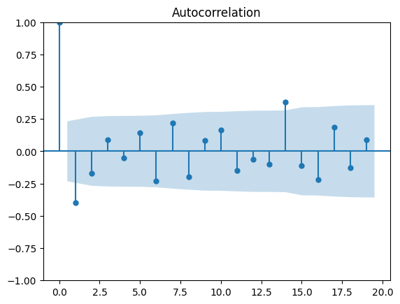

import matplotlib.pyplot as plt
import numpy as np
from statsmodels.tsa.stattools import adfuller
from statsmodels.graphics.tsaplots import plot_acf, plot_pacf
from statsmodels.tsa.arima.model import ARIMA
import pandas as pd
def perform_adf_test(series):
result = adfuller(series)
print('ADF Statistic: %f' % result[0])
print('p-value: %f' % result[1])
10: Undo Stationarity Transformation#
Original Series#
ts = pd.read_csv('../data/original_series.csv')
ts.index = np.arange(1,len(ts)+1)
plt.figure(figsize=(10,4))
plt.plot(ts)
plt.xticks(np.arange(0,78,6), fontsize=14)
plt.xlabel('Hours Since Published', fontsize=16)
plt.yticks(np.arange(0,50000,10000), fontsize=14)
plt.ylabel('Views', fontsize=16)
Text(0, 0.5, 'Views')
Original Series: \(v_t\)
Normalize (\(v_t \rightarrow n_t\)): \(n_t = \frac{v_t - \mu}{\sigma}\)
Exponentiate (\(n_t \rightarrow e_t\)): \(e_t = e^{n_t}\)
First Difference (\(e_t \rightarrow d_t\)): \(d_t = e_t - e_{t-1}\)
\(d_t = e^{\frac{v_t - \mu}{\sigma}} - e^{\frac{v_{t-1} - \mu}{\sigma}}\)#
1. Normalize#
mu = np.mean(ts).iloc[0]
sigma = np.std(ts).iloc[0]
norm_ts = (ts - mu) / sigma
plt.figure(figsize=(10,4))
plt.plot(norm_ts)
plt.xticks(np.arange(0,78,6), fontsize=14)
plt.xlabel('Hours Since Published', fontsize=16)
plt.yticks(np.arange(-3,2), fontsize=14)
plt.ylabel('Norm. Views', fontsize=16)
plt.axhline(0, color='k', linestyle='--')
<matplotlib.lines.Line2D at 0x7f5c58be18e0>
2. Exponentiate#
exp_ts = np.exp(norm_ts)
plt.figure(figsize=(10,4))
plt.plot(exp_ts)
plt.xticks(np.arange(0,78,6), fontsize=14)
plt.xlabel('Hours Since Published', fontsize=16)
plt.yticks(np.arange(0,3.5,.5), fontsize=14)
plt.ylabel('Exp. Norm. Views', fontsize=16)
Text(0, 0.5, 'Exp. Norm. Views')

perform_adf_test(exp_ts)
ADF Statistic: 1.648979
p-value: 0.997997
3. First Difference#
diff_ts = exp_ts.diff().dropna()
plt.figure(figsize=(10,4))
plt.plot(diff_ts)
plt.xticks(np.arange(0,78,6), fontsize=14)
plt.xlabel('Hours Since Published', fontsize=16)
plt.yticks(np.arange(-0.2,0.3,.1), fontsize=14)
plt.ylabel('First Diff. \nExp. Norm. Views', fontsize=16)
Text(0, 0.5, 'First Diff. \nExp. Norm. Views')
perform_adf_test(diff_ts)
ADF Statistic: -4.881064
p-value: 0.000038
Fit AR Model#
plot_pacf(diff_ts)
plt.show()
/home/ubuntu/Documents/Projects/msci_data/.venv/lib/python3.9/site-packages/statsmodels/graphics/tsaplots.py:348: FutureWarning: The default method 'yw' can produce PACF values outside of the [-1,1] interval. After 0.13, the default will change tounadjusted Yule-Walker ('ywm'). You can use this method now by setting method='ywm'.
warnings.warn(
plot_acf(diff_ts)
plt.show()

#create the model
model = ARIMA(diff_ts, order=(4,1,0))
/home/ubuntu/Documents/Projects/msci_data/.venv/lib/python3.9/site-packages/statsmodels/tsa/base/tsa_model.py:471: ValueWarning: An unsupported index was provided and will be ignored when e.g. forecasting.
self._init_dates(dates, freq)
/home/ubuntu/Documents/Projects/msci_data/.venv/lib/python3.9/site-packages/statsmodels/tsa/base/tsa_model.py:471: ValueWarning: An unsupported index was provided and will be ignored when e.g. forecasting.
self._init_dates(dates, freq)
/home/ubuntu/Documents/Projects/msci_data/.venv/lib/python3.9/site-packages/statsmodels/tsa/base/tsa_model.py:471: ValueWarning: An unsupported index was provided and will be ignored when e.g. forecasting.
self._init_dates(dates, freq)
model_fit = model.fit()
Predict Out 3 Hours#
predictions = model_fit.forecast(3)
/home/ubuntu/Documents/Projects/msci_data/.venv/lib/python3.9/site-packages/statsmodels/tsa/base/tsa_model.py:834: ValueWarning: No supported index is available. Prediction results will be given with an integer index beginning at `start`.
return get_prediction_index(
plt.figure(figsize=(10,4))
plt.plot(diff_ts)
plt.xticks(np.arange(0,78,6), fontsize=14)
plt.xlabel('Hours Since Published', fontsize=16)
plt.yticks(np.arange(-0.2,0.3,.1), fontsize=14)
plt.ylabel('First Diff. \nExp. Norm. Views', fontsize=16)
plt.plot(np.arange(len(ts)+1, len(ts)+4), predictions, color='g')
#plt.fill_between(np.arange(len(ts)+1, len(ts)+4), lower_bound, upper_bound, color='g', alpha=0.1)
[<matplotlib.lines.Line2D at 0x7f5c54ef9e50>]
Undo Transformations:#
\(\hat{d}_{t+1} \rightarrow \hat{v}_{t+1}\)
\(\hat{v}_{t+1} = \sigma \ln(\hat{d}_{t+1} + e^{\frac{v_t - \mu}{\sigma}}) + \mu\)
def undo_transformations(predictions, series, mu, sigma):
first_pred = sigma*np.log(predictions.iloc[0] + np.exp((series.iloc[-1]-mu)/sigma)) + mu
orig_predictions = [first_pred]
for i in range(len(predictions.iloc[1:])):
next_pred = sigma*np.log(predictions.iloc[i+1] + np.exp((orig_predictions[-1]-mu)/sigma)) + mu
orig_predictions.append(next_pred)
return np.array(orig_predictions).flatten()
orig_preds = undo_transformations(predictions, ts, mu, sigma)
#orig_lower_bound = undo_transformations(lower_bound, ts, mu, sigma)
#orig_upper_bound = undo_transformations(upper_bound, ts, mu, sigma)
plt.figure(figsize=(10,4))
plt.plot(ts)
plt.xticks(np.arange(0,78,6), fontsize=14)
plt.xlabel('Hours Since Published', fontsize=16)
plt.yticks(np.arange(0,50000,10000), fontsize=14)
plt.ylabel('Views', fontsize=16)
plt.plot(np.arange(len(ts)+1, len(ts)+4), orig_preds, color='g')
#plt.fill_between(np.arange(len(ts)+1, len(ts)+4), orig_lower_bound, orig_upper_bound, color='g', alpha=0.1)
[<matplotlib.lines.Line2D at 0x7f5c54e7cb50>]
plt.figure(figsize=(10,4))
plt.plot(ts)
plt.xticks(np.arange(0,78), fontsize=14)
plt.xlabel('Hours Since Published', fontsize=16)
plt.yticks(np.arange(40000,46000,1000), fontsize=14)
plt.ylabel('Views', fontsize=16)
plt.plot(np.arange(len(ts)+1, len(ts)+4), orig_preds, color='g')
#plt.fill_between(np.arange(len(ts)+1, len(ts)+4), orig_lower_bound, orig_upper_bound, color='g', alpha=0.1)
plt.xlim(64,76)
plt.ylim(40000, 45000)
(40000.0, 45000.0)